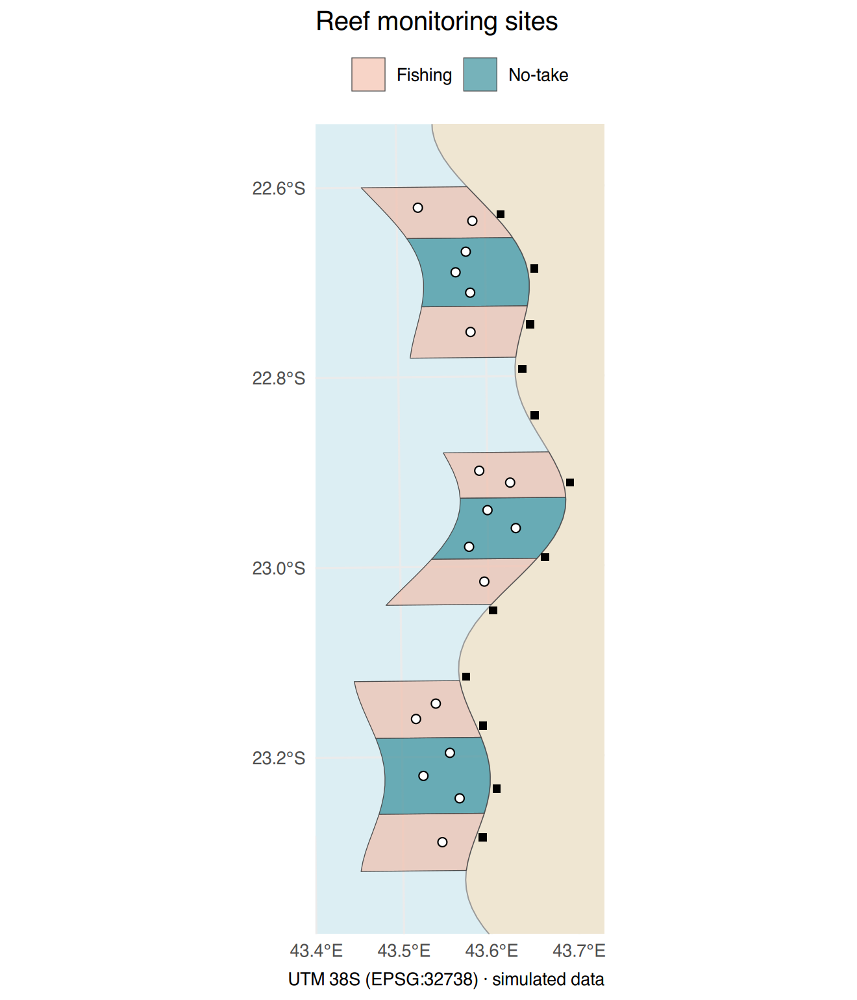
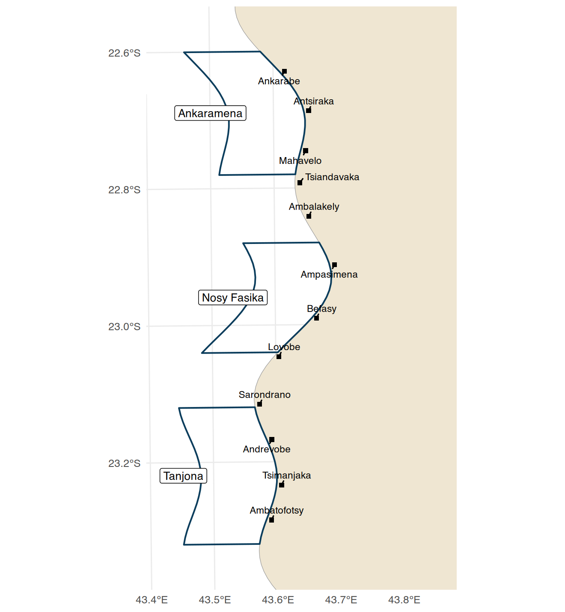
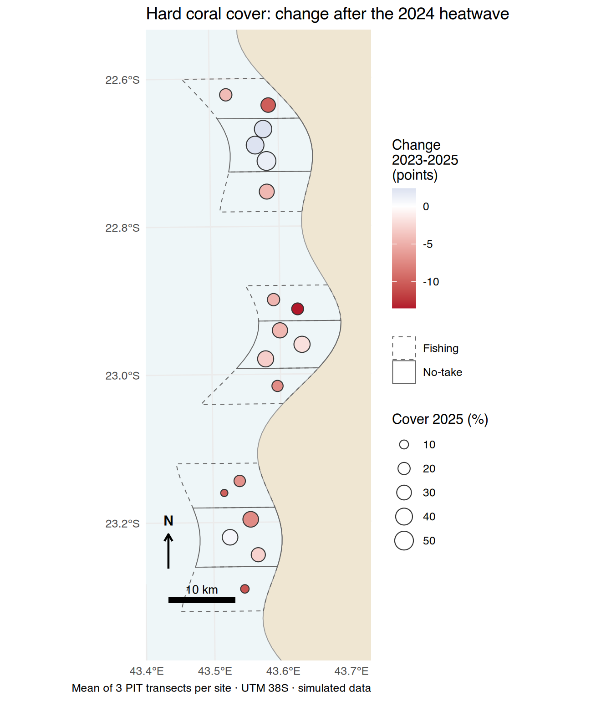
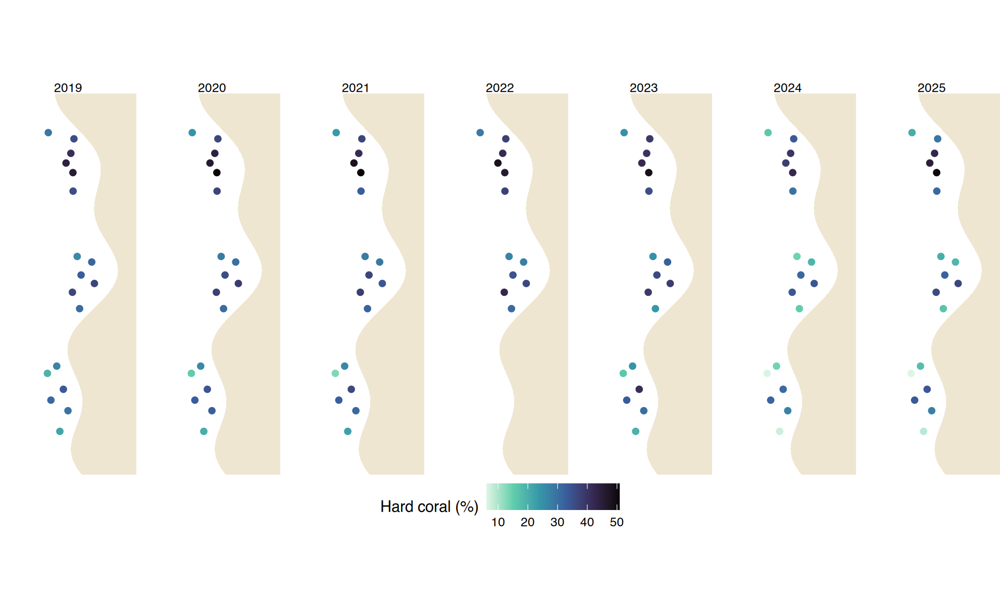
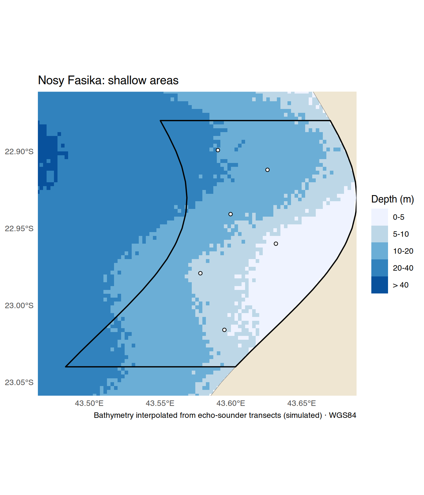
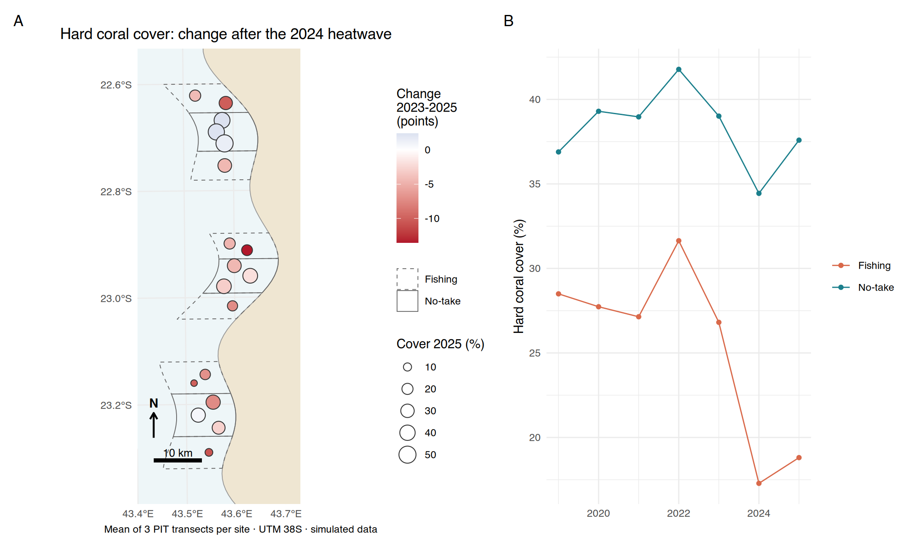

geom_sf(): several
layers, colours mapped to attributes, labels;coord_sf()
(CRS, zoom, graticule in degrees);geom_sf() :
plusieurs couches, couleurs selon des attributs, étiquettes ;coord_sf() (SCR, zoom, graticule en degrés) ;Data of this session (simulated). The GIS layers of
Session A5 (monitoring_gis.gpkg: land, MPA zones, reef
sites; villages_shp), the bathymetry raster of Session A6,
and the coral cover of the monitoring (reef_monitoring.csv,
2019–2025). The MPA managers asked for three maps for
their annual meeting: where the sites are, how coral cover changed
between 2023 and 2025, and where the water is shallow (for the mooring
buoys).
Données de cette séance (simulées). Les couches SIG
de la séance A5 (monitoring_gis.gpkg : terre, zones des
AMP, sites récifaux ; villages_shp), le raster de
bathymétrie de la séance A6, et le recouvrement corallien du suivi
(reef_monitoring.csv, 2019–2025). Les gestionnaires des AMP
ont demandé trois cartes pour leur réunion annuelle :
où sont les sites, comment le corail a changé entre 2023 et 2025, et où
l’eau est peu profonde (pour les bouées d’amarrage).
geom_sf() draws any sf layer — points, lines or polygons
— and understands its CRS. Each layer has its own data =,
as in Intermediate Session I11, but no more
coord_quickmap() or geom_polygon(): sf handles
the shapes and the projection.
geom_sf() dessine n’importe quelle couche sf — points,
lignes ou polygones — et comprend son SCR. Chaque couche a son propre
data =, comme à la séance intermédiaire I11, mais sans
coord_quickmap() ni geom_polygon() : sf gère
les formes et la projection.
bb <- st_bbox(st_buffer(zones, 3000)) # map frame: the zones + 3 km
ggplot() +
geom_sf(data = land, fill = "#efe6d2", colour = "grey60", linewidth = 0.3) +
geom_sf(data = zones, aes(fill = zone), colour = "grey30", linewidth = 0.2, alpha = 0.6) +
geom_sf(data = sites, shape = 21, fill = "white", size = 1.8) +
geom_sf(data = villages, shape = 15, size = 1.6) +
scale_fill_manual(values = c("No-take" = "#1b7f8c", "Fishing" = "#f2b8a2"), name = NULL) +
coord_sf(xlim = bb[c("xmin", "xmax")], ylim = bb[c("ymin", "ymax")],
crs = st_crs(zones), datum = 4326) + # draw in UTM, but graticule labels in degrees
scale_x_continuous(breaks = seq(43.4, 43.7, by = 0.1)) + # fewer longitude labels (in degrees)
labs(x = NULL, y = NULL, title = "Reef monitoring sites", caption = "UTM 38S (EPSG:32738) · simulated data") +
theme_minimal(base_size = 11) +
theme(panel.background = element_rect(fill = "#dceef3", colour = NA), legend.position = "top")
Functions and arguments used here
| Function / argument | What it does | Value it expects |
|---|---|---|
st_bbox(st_buffer(zones, 3000)) |
the rectangle around the zones enlarged by 3 km: the map frame (Session A5) | |
geom_sf(data, aes(...), fill, colour, linewidth, alpha, shape, size) |
draws any sf layer (polygons, lines, points); the usual ggplot2 settings apply (Intermediate I7) | an sf object |
coord_sf(xlim, ylim, crs, datum, expand) |
the frame and the projection of the map | |
xlim, ylim |
limits, in the units of crs (here metres):
bb[c("xmin", "xmax")] |
two numbers |
crs |
the CRS in which the map is drawn (default: that of the first layer) | an EPSG code or st_crs() |
datum |
the CRS of the graticule (grid lines and their labels); 4326 = degrees | an EPSG code |
scale_x_continuous(breaks) |
on a map the breaks are given in degrees (the graticule), even if the map is drawn in metres |
Fonctions et arguments utilisés ici
| Fonction / argument | Ce qu’il fait | Valeur attendue |
|---|---|---|
st_bbox(st_buffer(zones, 3000)) |
le rectangle autour des zones élargi de 3 km : le cadre de la carte (séance A5) | |
geom_sf(data, aes(...), fill, colour, linewidth, alpha, shape, size) |
dessine n’importe quelle couche sf (polygones, lignes, points) ; les réglages habituels de ggplot2 s’appliquent (intermédiaire I7) | un objet sf |
coord_sf(xlim, ylim, crs, datum, expand) |
le cadre et la projection de la carte | |
xlim, ylim |
limites, dans les unités de crs (ici des mètres) :
bb[c("xmin", "xmax")] |
deux nombres |
crs |
le SCR dans lequel la carte est dessinée (par défaut : celui de la première couche) | un code EPSG ou st_crs() |
datum |
le SCR du graticule (lignes de la grille et leurs étiquettes) ; 4326 = degrés | un code EPSG |
scale_x_continuous(breaks) |
sur une carte les graduations se donnent en degrés (le graticule), même si la carte est dessinée en mètres |
coord_sf() does three jobs: the zoom
(xlim, ylim, in the units of the CRS used for
drawing), the projection of the map (crs:
every layer is transformed on the fly), and the
graticule (datum: the lines and labels,
here in degrees for readers).
coord_sf() fait trois choses : le zoom
(xlim, ylim, dans les unités du SCR de
dessin), la projection de la carte (crs :
chaque couche est transformée à la volée), et le
graticule (datum : les lignes et
étiquettes, ici en degrés pour les lecteurs).
mpa_poly <- zones %>% group_by(mpa) %>% summarise(.groups = "drop") # dissolve (Session A5)
ggplot() +
geom_sf(data = land, fill = "#efe6d2", colour = "grey60") +
geom_sf(data = mpa_poly, fill = NA, colour = "#0b3d5c", linewidth = 0.6) +
geom_sf_label(data = mpa_poly, aes(label = mpa), size = 3, nudge_x = -9000) + # one label per MPA
geom_sf(data = villages, shape = 15, size = 1.4) +
ggrepel::geom_text_repel(data = villages, aes(label = village, geometry = geometry),
stat = "sf_coordinates", size = 2.6, min.segment.length = 0, seed = 1) +
coord_sf(xlim = bb[c("xmin", "xmax")] + c(0, 15000), ylim = bb[c("ymin", "ymax")], datum = 4326) +
labs(x = NULL, y = NULL) + theme_minimal(base_size = 10)
Functions and arguments used here
| Function / argument | What it does | Value it expects |
|---|---|---|
summarise(.groups = "drop") without statistic |
only dissolves the polygons of each group (Session A5) | |
geom_sf_label(aes(label), nudge_x) |
a label in a box at the centre of each feature; nudge_x
moves it, here in metres |
|
ggrepel::geom_text_repel(...) |
ggrepel package: labels pushed apart so they do not overlap, with a line to their point | |
aes(geometry = geometry),
stat = "sf_coordinates" |
tell ggrepel to take x and y from the geometry of the sf layer | |
min.segment.length |
shortest line drawn; 0 = always draw the line | a number |
seed |
fixes the random placement (like set.seed()), so the
labels stay at the same place |
a whole number |
Fonctions et arguments utilisés ici
| Fonction / argument | Ce qu’il fait | Valeur attendue |
|---|---|---|
summarise(.groups = "drop") without statistic |
fusionne seulement les polygones de chaque groupe (séance A5) | |
geom_sf_label(aes(label), nudge_x) |
une étiquette dans un cadre au centre de chaque entité ;
nudge_x la déplace, ici en mètres |
|
ggrepel::geom_text_repel(...) |
package ggrepel : étiquettes écartées pour ne pas se chevaucher, avec un trait vers leur point | |
aes(geometry = geometry),
stat = "sf_coordinates" |
indiquent à ggrepel de prendre x et y dans la géométrie de la couche sf | |
min.segment.length |
trait le plus court dessiné ; 0 = toujours dessiner le trait | un nombre |
seed |
fixe le placement aléatoire (comme set.seed()), pour
que les étiquettes restent au même endroit |
un nombre entier |
In a projected CRS in metres, a scale bar is just a segment of known length. Here is a small function (Intermediate, Session I6) that draws both in the bottom-left corner of any UTM map:
Dans un SCR projeté en mètres, une barre d’échelle n’est qu’un segment de longueur connue. Voici une petite fonction (intermédiaire, séance I6) qui dessine les deux dans le coin en bas à gauche de n’importe quelle carte en UTM :
scale_north <- function(bb, km = 10) {
x0 <- bb[["xmin"]] + 0.06 * (bb[["xmax"]] - bb[["xmin"]])
y0 <- bb[["ymin"]] + 0.05 * (bb[["ymax"]] - bb[["ymin"]])
h <- 0.06 * (bb[["ymax"]] - bb[["ymin"]])
list(
annotate("rect", xmin = x0, xmax = x0 + km * 1000, ymin = y0, ymax = y0 + h / 6, fill = "black"),
annotate("text", x = x0 + km * 500, y = y0 + h / 2.5, label = paste(km, "km"), size = 3),
annotate("segment", x = x0, xend = x0, y = y0 + h, yend = y0 + 2 * h,
arrow = arrow(length = unit(0.2, "cm")), linewidth = 0.7),
annotate("text", x = x0, y = y0 + 2.4 * h, label = "N", fontface = "bold", size = 3.5))
}Functions and arguments used here
| Function / argument | What it does | Value it expects |
|---|---|---|
bb[["xmin"]] |
one value of the bounding box, by name | |
list(annotate(...), ...) |
a ggplot can receive a list of layers with
+: our function returns four annotations at once |
|
annotate("rect" / "text" / "segment") |
reminders (Intermediate I8, I11); in UTM the positions are in
metres, so km * 1000 is the length of the bar |
Fonctions et arguments utilisés ici
| Fonction / argument | Ce qu’il fait | Valeur attendue |
|---|---|---|
bb[["xmin"]] |
une valeur du rectangle englobant, par son nom | |
list(annotate(...), ...) |
un ggplot peut recevoir une liste de couches avec
+ : notre fonction renvoie quatre annotations d’un
coup |
|
annotate("rect" / "text" / "segment") |
rappels (intermédiaire I8, I11) ; en UTM les positions sont en
mètres, donc km * 1000 est la longueur de la barre |
# With the package ggspatial (optional: install.packages("ggspatial")), the same in two lines:
library(ggspatial)
annotation_scale(location = "bl", width_hint = 0.3) +
annotation_north_arrow(location = "tl", style = north_arrow_fancy_orienteering)Functions and arguments used here
| Function / argument | What it does | Value it expects |
|---|---|---|
annotation_scale(location, width_hint) |
ggspatial: a scale bar computed from the CRS;
"bl" = bottom left; width_hint = approximate
share of the map width |
"bl", "br", "tl",
"tr"; 0 to 1 |
annotation_north_arrow(location, style) |
a north arrow; style chooses its drawing |
Fonctions et arguments utilisés ici
| Fonction / argument | Ce qu’il fait | Valeur attendue |
|---|---|---|
annotation_scale(location, width_hint) |
ggspatial : une barre d’échelle calculée à partir
du SCR ; "bl" = en bas à gauche ; width_hint =
part approximative de la largeur de la carte |
"bl", "br", "tl",
"tr" ; 0 à 1 |
annotation_north_arrow(location, style) |
une flèche du nord ; style choisit son dessin |
A scale bar drawn on a map in longitude/latitude is
wrong: one degree of longitude is not the same length as one degree of
latitude. Draw your maps in a projected CRS
(coord_sf(crs = 32738)) when you add a scale.
Une barre d’échelle dessinée sur une carte en
longitude/latitude est fausse : un degré de longitude
n’a pas la même longueur qu’un degré de latitude. Dessinez vos cartes
dans un SCR projeté
(coord_sf(crs = 32738)) quand vous ajoutez une échelle.
change <- reef %>% filter(year %in% c(2023, 2025)) %>%
group_by(site_id, year) %>% summarise(hc = mean(hard_coral), .groups = "drop") %>%
tidyr::pivot_wider(names_from = year, values_from = hc, names_prefix = "y") %>%
mutate(change = y2025 - y2023)
sites_ch <- left_join(sites, change, by = "site_id")
map_change <- ggplot() +
geom_sf(data = land, fill = "#efe6d2", colour = "grey60", linewidth = 0.3) +
geom_sf(data = zones, aes(linetype = zone), fill = NA, colour = "grey40", linewidth = 0.3) +
geom_sf(data = sites_ch, aes(fill = change, size = y2025), shape = 21, colour = "grey20") +
scale_fill_gradient2(low = "#b2182b", mid = "white", high = "#2166ac", midpoint = 0,
name = "Change\n2023-2025\n(points)") + # diverging: + and -
scale_size_area(max_size = 6, name = "Cover 2025 (%)") +
scale_linetype_manual(values = c("No-take" = "solid", "Fishing" = "dashed"), name = NULL) +
scale_north(bb, km = 10) +
coord_sf(xlim = bb[c("xmin", "xmax")], ylim = bb[c("ymin", "ymax")], datum = 4326) +
scale_x_continuous(breaks = seq(43.4, 43.7, by = 0.1)) +
labs(x = NULL, y = NULL, title = "Hard coral cover: change after the 2024 heatwave",
caption = "Mean of 3 PIT transects per site · UTM 38S · simulated data") +
theme_minimal(base_size = 10) + theme(panel.background = element_rect(fill = "#eef6f8", colour = NA))
map_change
Functions and arguments used here
| Function / argument | What it does | Value it expects |
|---|---|---|
tidyr::pivot_wider(names_prefix = "y") |
one column per year, called y2023, y2025
(Intermediate I2, I10) |
|
aes(linetype = zone) |
the line type depends on a column (here the outline of the zones) | |
scale_fill_gradient2(low, mid, high, midpoint, name) |
a diverging colour scale: low colour
for negative values, mid at midpoint,
high for positive values |
three colours; a number (here 0) |
scale_linetype_manual(values) |
chooses the line type of each category | a named vector: "solid", "dashed",
"dotted" |
scale_size_area(max_size) |
reminder (Intermediate I11) |
Fonctions et arguments utilisés ici
| Fonction / argument | Ce qu’il fait | Valeur attendue |
|---|---|---|
tidyr::pivot_wider(names_prefix = "y") |
une colonne par année, appelées y2023,
y2025 (intermédiaire I2, I10) |
|
aes(linetype = zone) |
le type de trait dépend d’une colonne (ici le contour des zones) | |
scale_fill_gradient2(low, mid, high, midpoint, name) |
une échelle de couleurs divergente : couleur
low pour les valeurs négatives, mid au
midpoint, high pour les positives |
trois couleurs ; un nombre (ici 0) |
scale_linetype_manual(values) |
choisit le type de trait de chaque catégorie | un vecteur nommé : "solid", "dashed",
"dotted" |
scale_size_area(max_size) |
rappel (intermédiaire I11) |
Choosing colours. A quantity that goes from low to
high: a sequential palette
(scale_fill_viridis_c(), "Blues"). A change
with a meaningful zero: a diverging palette centred on
0 (scale_fill_gradient2(),
scale_fill_distiller(palette = "RdBu")). Categories: a
qualitative palette with few colours. Avoid red–green
together (colour-blind readers), and check your map printed in grey.
Choisir les couleurs. Une quantité qui va de faible
à forte : une palette séquentielle
(scale_fill_viridis_c(), "Blues"). Une
variation avec un zéro qui a un sens : une palette
divergente centrée sur 0
(scale_fill_gradient2(),
scale_fill_distiller(palette = "RdBu")). Des catégories :
une palette qualitative avec peu de couleurs. Évitez
rouge et vert ensemble (lecteurs daltoniens), et vérifiez votre carte
imprimée en gris.
by_year <- reef %>% group_by(site_id, year) %>% summarise(hc = mean(hard_coral), .groups = "drop")
sites_y <- left_join(sites, by_year, by = "site_id") # one point per site AND year
ggplot() +
geom_sf(data = land, fill = "#efe6d2", colour = NA) +
geom_sf(data = sites_y, aes(colour = hc), size = 1.6) +
scale_colour_viridis_c(option = "mako", direction = -1, name = "Hard coral (%)") +
facet_wrap(~ year, nrow = 1) +
coord_sf(xlim = bb[c("xmin", "xmax")], ylim = bb[c("ymin", "ymax")]) +
theme_void(base_size = 10) + theme(legend.position = "bottom")
Functions and arguments used here
| Function / argument | What it does | Value it expects |
|---|---|---|
scale_colour_viridis_c(option = "mako", direction = -1, name) |
reminder (Intermediate I7): palette mako, reversed (high cover = dark), legend title | |
facet_wrap(~ year, nrow = 1) |
one map per year, all on one row | |
theme_void() |
a theme with no axes, no grid, no background: only the data | optional base_size |
Fonctions et arguments utilisés ici
| Fonction / argument | Ce qu’il fait | Valeur attendue |
|---|---|---|
scale_colour_viridis_c(option = "mako", direction = -1, name) |
rappel (intermédiaire I7) : palette mako, inversée (couverture forte = foncé), titre de la légende | |
facet_wrap(~ year, nrow = 1) |
une carte par année, toutes sur une ligne | |
theme_void() |
un thème sans axes, ni grille, ni fond : seulement les données | base_size facultatif |
facet_wrap() works with geom_sf() exactly
as with other plots. Note the gaps: Tanjona has no points in 2022.
facet_wrap() marche avec geom_sf()
exactement comme avec les autres graphiques. Notez les trous : Tanjona
n’a pas de points en 2022.
ggplot2 needs a data frame:
as.data.frame(r, xy = TRUE) gives one row per cell (x, y,
value), drawn with geom_raster(). The raster is in
longitude/latitude, so we draw this map in WGS84 and put the vector
layers in the same CRS.
ggplot2 a besoin d’un data frame :
as.data.frame(r, xy = TRUE) donne une ligne par cellule (x,
y, valeur), dessinée avec geom_raster(). Le raster est en
longitude/latitude : nous dessinons donc cette carte en WGS84 et mettons
les couches vecteur dans le même SCR.
bathy <- rast("data/advanced/bathymetry.tif")
nf <- st_transform(filter(mpa_poly, mpa == "Nosy Fasika"), 4326)
b_nf <- crop(bathy, vect(st_buffer(nf, 2000))) # Session A6
b_df <- as.data.frame(b_nf, xy = TRUE) # columns x, y, depth_m
b_df$class <- cut(b_df$depth_m, c(0, 5, 10, 20, 40, Inf),
labels = c("0-5", "5-10", "10-20", "20-40", "> 40"))
ggplot() +
geom_raster(data = b_df, aes(x, y, fill = class)) +
geom_sf(data = st_transform(land, 4326), fill = "#efe6d2", colour = "grey50") +
geom_sf(data = nf, fill = NA, colour = "black", linewidth = 0.6) +
geom_sf(data = st_transform(filter(sites, mpa == "Nosy Fasika"), 4326), shape = 21, fill = "white") +
scale_fill_brewer(palette = "Blues", name = "Depth (m)") +
coord_sf(xlim = range(b_df$x), ylim = range(b_df$y), expand = FALSE) +
labs(title = "Nosy Fasika: shallow areas", x = NULL, y = NULL,
caption = "Bathymetry interpolated from echo-sounder transects (simulated) · WGS84") +
theme_minimal(base_size = 10)
Functions and arguments used here
| Function / argument | What it does | Value it expects |
|---|---|---|
as.data.frame(r, xy = TRUE) |
a raster → a table with one row per cell: columns x,
y (cell centre) and the values |
a SpatRaster; TRUE |
cut(x, breaks, labels) |
depth classes (Intermediate I5) | |
geom_raster(aes(x, y, fill)) |
draws one square per row (cell): fast for regular grids | |
scale_fill_brewer(palette = "Blues") |
a ColorBrewer palette for ordered classes (Intermediate I7) | |
range(x), expand = FALSE |
frame = exactly the extent of the raster |
Fonctions et arguments utilisés ici
| Fonction / argument | Ce qu’il fait | Valeur attendue |
|---|---|---|
as.data.frame(r, xy = TRUE) |
un raster → un tableau avec une ligne par cellule : colonnes
x, y (centre de la cellule) et les
valeurs |
un SpatRaster ; TRUE |
cut(x, breaks, labels) |
classes de profondeur (intermédiaire I5) | |
geom_raster(aes(x, y, fill)) |
dessine un carré par ligne (cellule) : rapide pour des grilles régulières | |
scale_fill_brewer(palette = "Blues") |
une palette ColorBrewer pour des classes ordonnées (intermédiaire I7) | |
range(x), expand = FALSE |
cadre = exactement l’étendue du raster |
tmap is a package made only for thematic maps:
shorter code, map elements included (scale bar, compass), rasters and
vectors mixed directly, and the same code gives an interactive
web map with tmap_mode("view"). The code below
uses tmap version 4 (the current version on CRAN);
version 3 used col = where version 4 uses
fill =.
Note: tmap could not be installed on the computer that built this page, so its output is not shown — run the code in RStudio.
tmap est un package fait uniquement pour les cartes
thématiques : code plus court, éléments de carte inclus (échelle,
boussole), rasters et vecteurs mélangés directement, et le même
code donne une carte web interactive avec
tmap_mode("view"). Le code ci-dessous utilise tmap
version 4 (la version actuelle sur le CRAN) ; la version 3
utilisait col = là où la version 4 utilise
fill =.
Remarque : tmap n’a pas pu être installé sur l’ordinateur qui a construit cette page, son résultat n’est donc pas affiché — lancez le code dans RStudio.
library(tmap) # install.packages("tmap"); version >= 4.0
tmap_mode("plot") # static map
tm_shape(land, bbox = bb) + tm_polygons(fill = "#efe6d2") +
tm_shape(zones) + tm_polygons(fill = "zone", fill_alpha = 0.6,
fill.scale = tm_scale_categorical(values = c("#f2b8a2", "#1b7f8c"))) +
tm_shape(sites_ch) + tm_dots(fill = "change", size = 0.6,
fill.scale = tm_scale_continuous(values = "brewer.rd_bu", midpoint = 0)) +
tm_scalebar(position = c("left", "bottom")) +
tm_compass(position = c("left", "top")) +
tm_title("Change in hard coral cover, 2023-2025")
tmap_mode("view") # the same map, interactive (zoom, background tiles, pop-ups)
tm_shape(sites_ch) + tm_dots(fill = "change", popup.vars = c("site_id", "y2023", "y2025"))
tmap_mode("plot") # back to static mapsFunctions and arguments used here
| Function / argument | What it does | Value it expects |
|---|---|---|
tmap_mode(mode) |
"plot" = static maps, "view" = interactive
web maps (zoom, background tiles) |
"plot" / "view" |
tm_shape(shp, bbox) |
the layer to draw next (and, for the first one, the map frame) | an sf or terra object |
tm_polygons(fill, fill_alpha, fill.scale) |
draws polygons; fill = a colour or a column
name in quotes |
|
tm_dots(fill, size, popup.vars) |
draws points; popup.vars = columns shown when clicking
(view mode) |
|
tm_scale_categorical(values),
tm_scale_continuous(values, midpoint) |
how values become colours (tmap’s version of
scale_fill_…()) |
colours or a palette name |
tm_scalebar(), tm_compass(),
tm_title() |
scale bar, north arrow, title;
position = c("left", "bottom") |
Fonctions et arguments utilisés ici
| Fonction / argument | Ce qu’il fait | Valeur attendue |
|---|---|---|
tmap_mode(mode) |
"plot" = cartes statiques, "view" = cartes
web interactives (zoom, fonds de carte) |
"plot" / "view" |
tm_shape(shp, bbox) |
la couche à dessiner ensuite (et, pour la première, le cadre de la carte) | un objet sf ou terra |
tm_polygons(fill, fill_alpha, fill.scale) |
dessine des polygones ; fill = une couleur ou
un nom de colonne entre guillemets |
|
tm_dots(fill, size, popup.vars) |
dessine des points ; popup.vars = colonnes affichées au
clic (mode view) |
|
tm_scale_categorical(values),
tm_scale_continuous(values, midpoint) |
comment les valeurs deviennent des couleurs (la version tmap de
scale_fill_…()) |
couleurs ou un nom de palette |
tm_scalebar(), tm_compass(),
tm_title() |
barre d’échelle, flèche du nord, titre ;
position = c("left", "bottom") |
ggplot2 and tmap do the same maps with different words: a column is
given without quotes inside aes() in
ggplot2, but with quotes in tmap
(fill = "zone"); transparency is alpha in
ggplot2, fill_alpha in tmap; the colour scale is
scale_fill_…() in ggplot2,
fill.scale = tm_scale_…() in tmap.
ggplot2 et tmap font les mêmes cartes avec des mots différents : une
colonne se donne sans guillemets dans
aes() avec ggplot2, mais avec guillemets
dans tmap (fill = "zone") ; la transparence s’appelle
alpha dans ggplot2, fill_alpha dans tmap ;
l’échelle de couleurs est scale_fill_…() dans ggplot2,
fill.scale = tm_scale_…() dans tmap.
Which one? Use ggplot2 + sf when the map sits next to other ggplot figures in a report (same style, patchwork) — and it is what this course used so far. Use tmap for quick, map-only work, and for interactive maps to explore your data or to put in an HTML report.
Lequel choisir ? Utilisez ggplot2 + sf quand la carte est à côté d’autres figures ggplot dans un rapport (même style, patchwork) — c’est ce que ce cours a utilisé jusqu’ici. Utilisez tmap pour un travail rapide centré sur les cartes, et pour les cartes interactives, pour explorer vos données ou les mettre dans un rapport HTML.
trend <- reef %>% left_join(st_drop_geometry(sites)[, c("site_id", "zone")], by = "site_id") %>%
group_by(year, zone) %>% summarise(m = mean(hard_coral), .groups = "drop")
g_trend <- ggplot(trend, aes(year, m, colour = zone)) + geom_line() + geom_point() +
scale_colour_manual(values = c("No-take" = "#1b7f8c", "Fishing" = "#d9694a"), name = NULL) +
labs(x = NULL, y = "Hard coral cover (%)") + theme_minimal(base_size = 10)
(map_change | g_trend) + plot_layout(widths = c(1.2, 1)) + plot_annotation(tag_levels = "A")
Functions and arguments used here
| Function / argument | What it does | Value it expects |
|---|---|---|
plot_layout(widths) |
patchwork: relative widths of the plots side by side (here the map 1.2 × wider) | a vector of numbers |
plot_annotation(tag_levels = "A") |
letters A, B on the panels (Intermediate I8) |
Fonctions et arguments utilisés ici
| Fonction / argument | Ce qu’il fait | Valeur attendue |
|---|---|---|
plot_layout(widths) |
patchwork : largeurs relatives des graphiques côte à côte (ici la carte 1,2 × plus large) | un vecteur de nombres |
plot_annotation(tag_levels = "A") |
lettres A, B sur les panneaux (intermédiaire I8) |
fig <- (map_change | g_trend) + plot_layout(widths = c(1.2, 1)) + plot_annotation(tag_levels = "A")
ggsave(here::here("outputs", "figures", "map_coral_change.pdf"), fig, width = 24, height = 14, units = "cm")
ggsave(here::here("outputs", "figures", "map_coral_change.png"), fig, width = 24, height = 14, units = "cm", dpi = 300)Checklist of a good map. Title or caption saying what, where, when; legend with units; scale bar (projected CRS!) and north arrow when needed; source of the data and CRS in the caption; no more than 5–7 colour classes; the important layer on top and the background discreet. Check your three maps against it.
Liste de contrôle d’une bonne carte. Titre ou légende disant quoi, où, quand ; légende avec unités ; barre d’échelle (SCR projeté !) et flèche du nord si utile ; source des données et SCR dans la légende ; pas plus de 5 à 7 classes de couleurs ; la couche importante au-dessus et le fond discret. Vérifiez vos trois cartes avec cette liste.
Script R/07_maps.R. Make the three maps
of the managers and save them in outputs/figures/ (PDF and
PNG 300 dpi):
tmap_mode("view").Script R/07_maps.R. Réalisez les trois
cartes des gestionnaires et enregistrez-les dans
outputs/figures/ (PDF et PNG 300 dpi) :
tmap_mode("view").Build the change table first (mean per site and year,
pivot_wider(), y2025 - y2023),
then join it to the sites layer with
left_join(sites, change, by = "site_id") — sites first, so
that the result stays an sf object.
Construisez d’abord le tableau des variations (moyenne par site et
par année, pivot_wider(), y2025 - y2023),
puis joignez-le à la couche des sites avec
left_join(sites, change, by = "site_id") — les sites en
premier, pour que le résultat reste un objet sf.
library(sf); library(dplyr); library(tidyr); library(ggplot2); library(here)
# ... read land, zones, sites, villages, reef as in this session ...
change <- reef %>% filter(year %in% c(2023, 2025)) %>%
group_by(site_id, year) %>% summarise(hc = mean(hard_coral), .groups = "drop") %>%
pivot_wider(names_from = year, values_from = hc, names_prefix = "y") %>%
mutate(change = y2025 - y2023)
sites_ch <- left_join(sites, change, by = "site_id")
sum(sites_ch$change < 0) # 2a
sites_ch[which.min(sites_ch$change), c("site_id", "change")] # 2b, 2c
sum(sites_ch$y2025 < 20) # 2d
st_drop_geometry(sites_ch) %>% group_by(zone) %>% summarise(m = mean(change)) # 3: No-take minus Fishing
ggsave(here("outputs", "figures", "map_change.png"), map_change, width = 16, height = 20, units = "cm", dpi = 300)